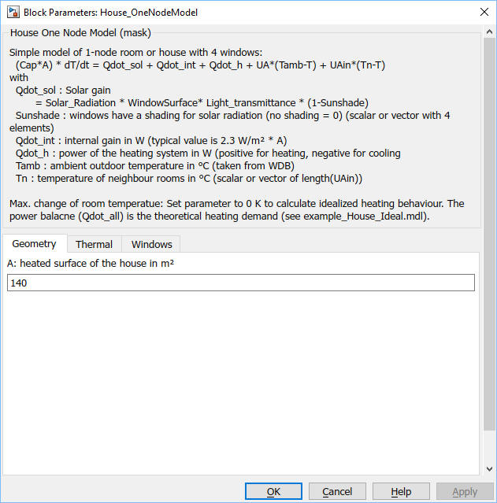

House_OneNodeModel
Path: CARNOT/Basic/ThermalModels
Purpose:
One node / one zone model of a house with 4 ouside walls with windows.
Description:
Simple and fast one node / one zone model of a house with 4 ouside walls
with windows. Neighbour building(s) or room(s) may be modelled by using
the same block or just as a constant temperature zone.
The mathematical description of the house is the differential equation:
(m*cp)house * dThouse / dt =
(UA)wall,roof * (Tamb - Thouse)
+ (UA)ground (Tground - Thouse)
+ (UA)neighbour(Tneighbour - Thouse)
+ (1 - Sunshade) *
[ Gwindow1*Awindow1*Iglb,window1
+ Gwindow2*Awindow2*Iglb,window2
+ Gwindow3*Awindow3*Iglb,window3
+ Gwindow4*Awindow4*Iglb,window4 ]
+ Qdotvent + Qdotint + Qdotheating
with
Sunshade : Windows have a shading for solar radiation (no shading = 0)
- scalar (for all windows) or vector with 4 elements (one for each window)
Qdotint : internal gain in W (typical value is 2.3 W/m² * A)
Qdotheating : power of the heating system in W
(positive for heating, negative for cooling )
Qdotvent : ventilation losses, typically Qdotvent
= Vhouse * nair * (Tamb - Thouse)
Tamb : ambient outdoor temperature in °C (taken from WDB)
Tn : temperature of neighbour rooms in °C (scalar or vector of
length((UA)neighbour))
Solar gains are calculated from the solar radiation on the window surface (Awindow), the energetic solar light transmittance of the glass (Gwindow) and the Sunshade.
The maximum change of room temperature can be limited by a parameter
(see example_House_Ideal.slx).
Set parameter "Max. change room temperature" to :
Detailed descriptions of building simulation models have been presented by Ochs: BES Simulation, 2022 and Ochs: Überblick der Aktivitäten an der UIBK, 2013 at the Carnot User Meetings.
Input:
| Tneighbour | : | Temperature of the neighbour zone in °C |
| WDB | : | weather data bus |
| Sunshade | : | shading control (0 = no shading, 1 = full shading) |
| Qdot_ground | : | transmission losses to the ground in W (negative for losses of the room to the ground) |
| Qdot_internal | : | internal gains in W |
| Qdot_heating | : | energy flow from or to the heating/cooling system in W (positive for flow from the heating system to the room) |
| Qdot_vent | : | ventilation losses in W (negative for losses) |
Output:
| Troom | : | room temperature in °C |
| Qdot_all | : | Bus with energy flows (see below) |
Definition of the bus Qdot_all :
| Qdot_neighbour | : | energy flow to the neighbour zone in W (= 0 W for the house simple model) |
| Qdot_trans_wall | : | transmission losses through the wall in W (negative for losses) |
| Qdot_trans_window | : | transmission losses through the windows in W (negative for losses) |
| Qdot_solar | : | solar gains in W |
| Qdot_ground | : | energy flow to the ground in W (negative for losses) |
| Qdot_internal | : | internal gains in W |
| Qdot_h | : | energy flow from or to the heating/cooling system in W (positive for flow from the heating system to the room) |
| Qdot_vent | : | ventilation losses in W (negative for losses) |
Parameters and Dialog Box:

Examples:
Open the example explorer from the Matlab command window
ExampleBrowser
or load the examples via the CARNOT library.
Literature:
Ochs, Breuss, Jenewein, Magni, Venturi: BES Performance Matlab vs. Simulink,
Carnot User Meeting, Innsbruck, 2022
also available on
https://fh-aachen.sciebo.de/index.php/s/0hxub0iIJrui3ED?path=%2FNutzertreffen%2F2022_Innsbruck
Fabian Ochs: Überblick der Aktivitäten an der UIBK, Carnot User Meeting, Basel/Muttenz, 2013
also available on
https://fh-aachen.sciebo.de/index.php/s/0hxub0iIJrui3ED?path=%2FNutzertreffen%2F2013_Basel
Characteristics:
| Direct Feedthrough | : | No (for the room temperature Troom), Yes (for the power output Qdot_all) |
| Sample Time | : | Inherited from driving block |
| Vectorized | : | No |